31 개 프로젝트
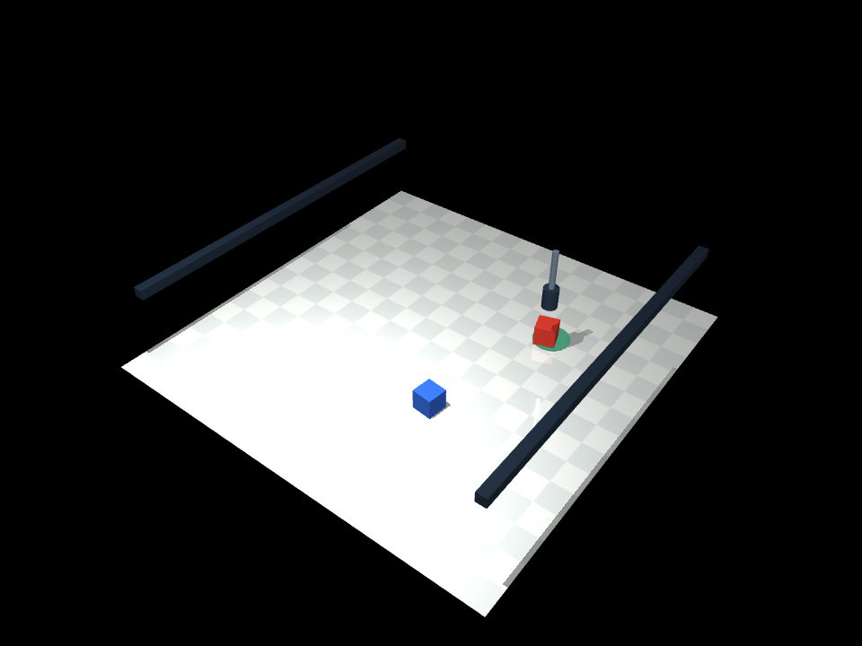
로보틱스 · 물리 실행·평가 RoboSkill Lab 2026.09 말로 지시한 블록 밀기 작업을 MuJoCo의 물리 접촉으로 실행합니다. 한 번 계획해 미는 방식과 위치를 다시 보며 수정하는 방식을 24회 실행하고, 성공률·소요 시간·실패 기록을 비교했습니다.
Python MuJoCo NumPy
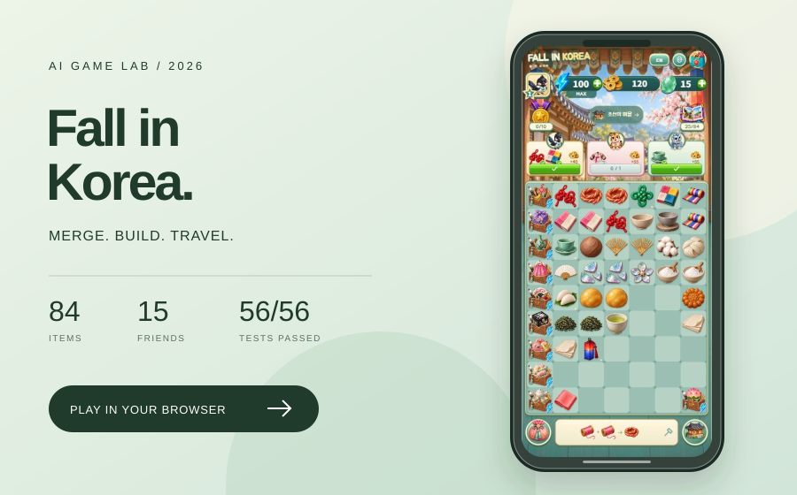
LIVE / AI 제작·테스트 실험 Fall in Korea · 폴 인 코리아 2026.09 AI와 함께 기획·코드·이미지 제작·반복 테스트를 진행한 한국 여행 머지 게임. 휴대폰 체험 화면에서 아이템을 합성하고 주문을 완성하며 마을을 둘러봅니다.
Codex AI image generation JavaScript
구현과 공개 범위 한국 전통 공예와 여행을 합성 게임으로 풀어내고, AI가 작성한 구현을 실제 플레이와 자동 검사로 반복 수정했습니다.
전통 매듭→노리개 등 14계열·84아이템, 15캐릭터, 4시대·12건물과 한·영 전환. 이미지 모델로 에셋 생성 후 스프라이트 경계를 맞추고, 생성함·합성 안내·양축 드래그 맵을 피드백에 따라 수정. 실제 자동 테스트 56/56 통과. 합성·주문·보상·저장 이관·오프라인 캐시·네이티브 저장 순서를 검증하고 원본 기록과 재현 소스를 공개. 휴대폰 프레임의 웹 프로토타입이며 실행 중 AI 모델을 호출하지 않습니다. iOS 프로젝트는 준비했지만 실기기·Xcode 컴파일·앱스토어 출시 검증은 완료하지 않았습니다.
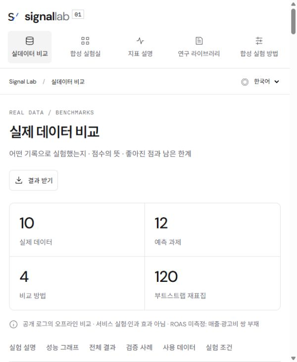
LIVE / 실제 데이터 · 오프라인 검증 Signal Lab · CTR / CVR 2026.09 클릭률·전환율·참여·재구매 예측 비교. 실제 공개 데이터 10종 · 예측 과제 12개 · 비교 방법 4종. 실험 과정·예상과 결과·점수 해설의 한·영 탐색.
Python scikit-learn JavaScript
구현과 공개 범위 모델 점수 변화와 실제 서비스 개선의 구분. 동일 시험 기록에서 방법별 예측 품질 비교.
학습·방법 선택·최종 시험 자료 분리. 평균 확률·기본 예측·조건 조합·확률 조정 비교. 예측 점수·확률 일치도·반복 추출 구간 비교. 개선·악화·추가 확인 필요 구분. 데이터 출처·평가 결과·허용된 샘플 예시·재현 코드 공개. 합성 시뮬레이션 별도 표시. 공개 데이터의 오프라인 예측 평가. 실제 클릭·구매·매출 증가 및 인과 효과 미검증. 실제 매출·광고비를 연결한 ROAS 측정 없음.
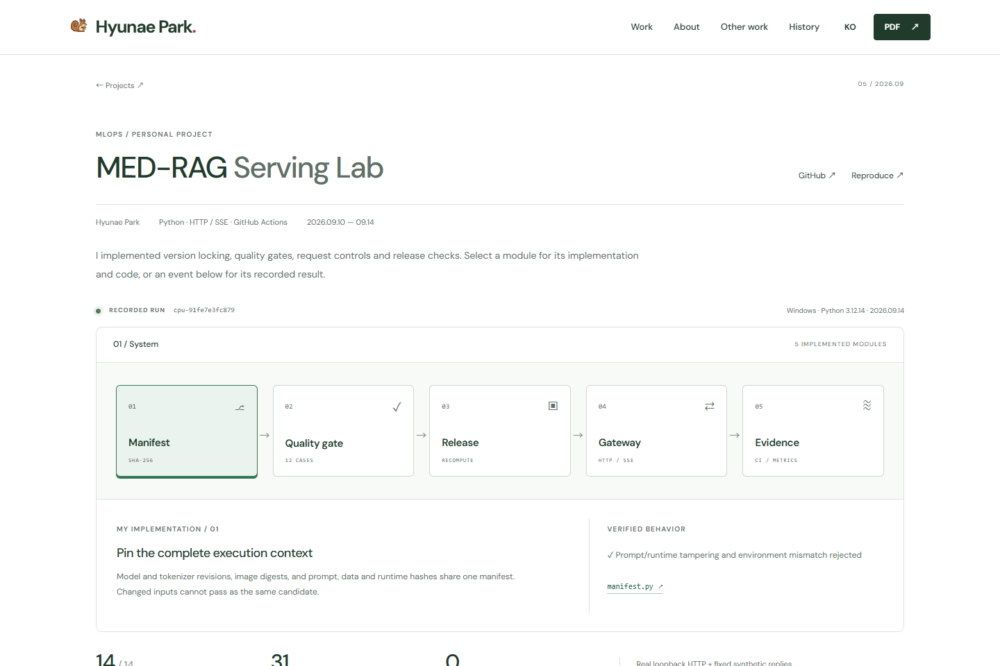
LIVE / 실행 기록 탐색 · CPU 검증 MED-RAG Serving Lab 2026.09 LLM 변경을 검사하고 배포 후보를 준비하는 MLOps 실험. 실제 HTTP 게이트웨이에 장애를 주입하고, 품질 회귀와 artifact 변조를 배포 준비 단계에서 차단했습니다.
MLOps Python HTTP / SSE
AI · 모델 비교 VisionEye 2026.09 사람의 이동과 선 통과를 추적합니다. 원근·가림·재등장 영상 3개를 보강해 검출기 4개와 추적 설정 3개를 비교했습니다. 원본·결과 영상, 63회 실행 기록과 누락 사례를 공개했습니다.
Python YOLO RT-DETRv2
AI / 저장된 추론 비교 RelateAnything Lab 2026.09 물체 사이의 관계를 예측하는 공개 모델을 RTX 4090에서 실행했습니다. 생성 영상에서 검출 분류가 바뀌며 병의 관계 점수가 사라지는 원인을 분석하고, 객체 연결과 시간 후처리를 분리해 비교합니다.
Python PyTorch YOLO11s
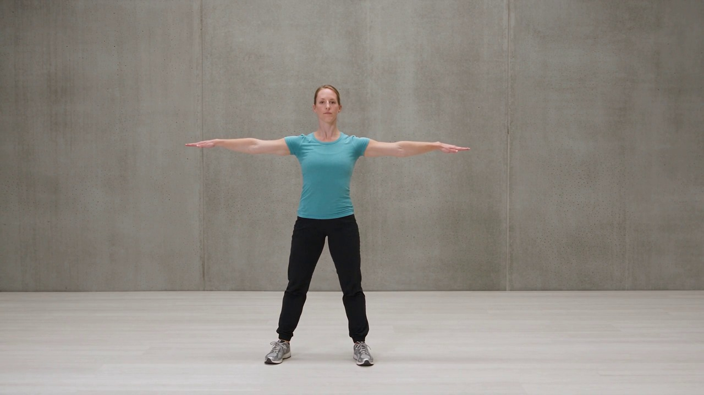
AI / 기준 동작 비교 MotionCheck Lab 2026.09 기준 동작과 후보 영상을 관절 단위로 비교한 21개 실험입니다. 단순 자세 차이를 구분한 결과와 함께, 시간 정렬이 실제 춤의 순서 변경·생략·정지를 놓친 한계를 공개합니다.
Python YOLO11s Pose CUDA
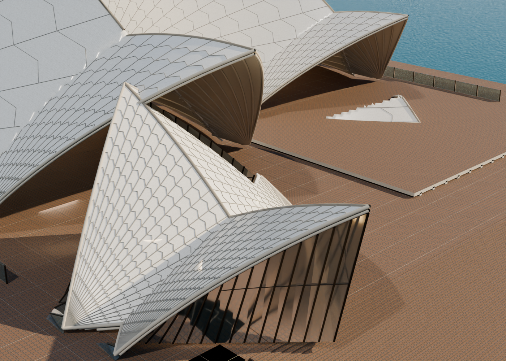
LIVE / 인터랙티브 3D Venue Atlas 2026.09 시드니 오페라하우스·예술의전당·국립국악원의 외부와 내부를 둘러보는 3D 투어. 문을 열고 연결 공간을 걸으며, 시점·조명과 관객 애니메이션을 조작합니다.
Three.js Blender Python
구현과 공개 범위 사진과 공개 자료로 재구성한 공연장을 반복해서 탐색하고 연출할 수 있는 웹 경험으로 연결했습니다. 좌석·소품·문은 Blender 원본에서 개별 편집하고, 웹에서는 정적 메시를 병합·인스턴싱해 표시합니다.
세 시설의 31개 공간을 마우스 회전·이동·확대/축소와 보행 모드로 탐색합니다. 공간 단독 보기, 저장된 시점과 조명 조절을 제공합니다. 문짝 56개에 회전·슬라이딩 개폐를 연결하고, 좌석 지지면과 문을 통과하는 동선을 점검했습니다. 목재·석재·패브릭 재질과 문틀·손잡이·좌석 디테일을 보강했습니다. 관객 표시를 켜고 끄며 박수·환호·걷기 동작을 재생합니다. 기존 인물 리그의 애니메이션과 추가 GLB 가져오기를 지원합니다. Blender 원본, 애니메이션 인물과 오프라인 웹 뷰어를 ZIP으로 제공합니다. CC0 재질과 MIT 인물 자산의 출처·라이선스를 함께 보존했습니다. 사진과 공개 자료를 참고한 시각적 재구성입니다. 실측 도면으로 확인하지 못한 일부 치수와 연결 통로는 추정이며, 시설 전체를 정확히 복제한 디지털 트윈은 아닙니다.
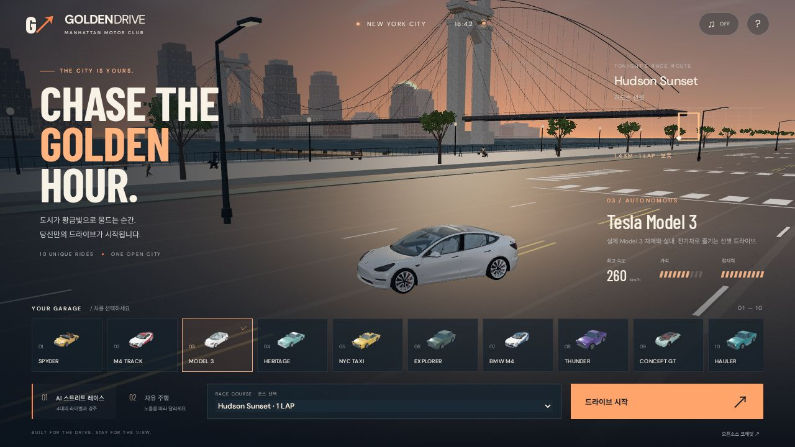
브라우저 게임 / 로컬 데모 Golden Drive 2026.09 노을 지는 뉴욕과 서울 광화문을 달리는 3D 브라우저 레이싱 게임. 슈퍼카를 포함한 15개 차량 설정, 6개 코스에서 AI 차량 4대와 경주하거나 자유롭게 드라이브합니다.
Three.js cannon-es JavaScript
구현과 공개 범위 설치 없이 도시의 노을을 즐기며 달릴 수 있는 게임을 만들었습니다. 차량과 거리의 상세도를 높이면서 생긴 렌더링 부하를 줄이고, 조작감과 경주 판정도 함께 개선했습니다.
게임 구성 — 뉴욕·서울 2개 도시, 6개 코스, 15개 차량 설정과 자유 주행. 도시·차량 선택부터 카메라·HUD·최고 기록까지 연결하고 키보드·터치·게임패드를 지원합니다. 주행 물리 — cannon-es의 120Hz 고정 간격 계산에 가속·제동·코너링이 공유하는 접지력 한도와 속도별 조향을 적용했습니다. 차종별 무게·출력·접지 설정으로 조작감을 구분합니다. AI와 경주 규칙 — 경쟁 차량 4대가 같은 물리 공간에서 주행합니다. 연속 이동 기반 체크포인트 판정, 결승 시점 보간, 복귀 +5초와 페널티 반영 순위를 구현하고 자율주행·복귀 기록은 최고 기록에서 제외합니다. 도시와 성능 — 강변·광화문 거리와 보행자·강아지 산책을 구성했습니다. 차량 모델 경량화, 인스턴싱, 거리별 상세 표시, 움직임 보간과 자동 그래픽 조절로 렌더링 부하를 관리합니다. 검증 — 1.4 업데이트에서 차량 역학·경주 판정·AI 완주·렌더링 예산 등을 다룬 자동 테스트 65개를 통과했습니다. 브라우저에서 뉴욕·서울 완주와 모바일 터치 가속·제동·일시정지를 확인했습니다. 현재 이 페이지에는 프로젝트 소개와 실제 화면을 공개하며, 플레이 데모는 아직 공개하지 않았습니다. 도시는 실측·스캔 복원이 아닌 게임용 재해석입니다. 물리는 브라우저 조작감을 위한 아케이드 근사이며 제조사의 실제 성능을 재현하지 않습니다. 성능은 기기·브라우저에 따라 달라지고 간헐적인 프레임 지연이 남아 있습니다. 차량에는 외부 3D 모델을 활용했습니다. 대표 이미지의 Tesla Model 3는 aarajesh의 CC BY 4.0 모델이며 게임용 배치·재질을 적용했습니다.
LIVE / 인터랙티브 3D B737-8 3D Explorer 2026.09 기체 외피부터 조종석·객실·LEAP-1B 엔진까지 탐색하는 3D 항공기 뷰어. 부품을 선택·분해하고, 창문 덮개·테이블·날개의 동작과 조명을 직접 조작합니다.
Three.js Blender Python
구현과 공개 범위 제공받은 항공기 모델의 창문·외피 정합과 문·선반 리깅을 수정하고, 정적인 형상을 내부 구조와 작동 원리까지 살펴볼 수 있는 웹 경험으로 확장했습니다.
31,665개 부품을 이름으로 검색·선택·단독 표시하고 분해합니다. 선택 부품의 재질과 관련 애니메이션을 GLB로 내보내며, 전체 GLB·Blender 파일도 제공합니다. Singapore Airlines의 737-8 운항 사례를 참고한 비즈니스 10석·이코노미 144석, 조종석과 LEAP-1B 엔진을 구성했습니다. 일등석은 별도 디자인 콘셉트로 구분합니다. 88개 창문 덮개의 곡면 슬라이딩과 좌석별 잠금 해제·테이블 펼침을 구현했습니다. 위치별 또는 연동 조작을 지원하며, 날개는 플랩·앞전 장치, 스포일러, 보조익으로 나누어 제어합니다. FlightGear 공개 메시와 CC0 재질을 수정·활용하고, PBR·HDR 환경광과 네 가지 라이팅 프리셋을 연결했습니다. 출처·라이선스·재생성 소스는 뷰어에서 제공합니다. 웹·GLB·Blender의 부품 위치, 재질과 애니메이션을 교차 검증하고, 실제 브라우저 조작과 Blender 렌더로 확인했습니다. 배포 자산과 다운로드 파일도 로컬 최종본과 대조했습니다. 공개 사양과 제공 모델에 맞춘 시각적 재현입니다. 제조사 CAD를 확보하지 않은 내부 단면·링크 치수·작동 경로는 추정이며, 애니메이션 시간은 검사 시연용입니다. 실제 기체의 모든 부품이나 비행 절차를 완전히 재현한 시뮬레이터는 아닙니다.
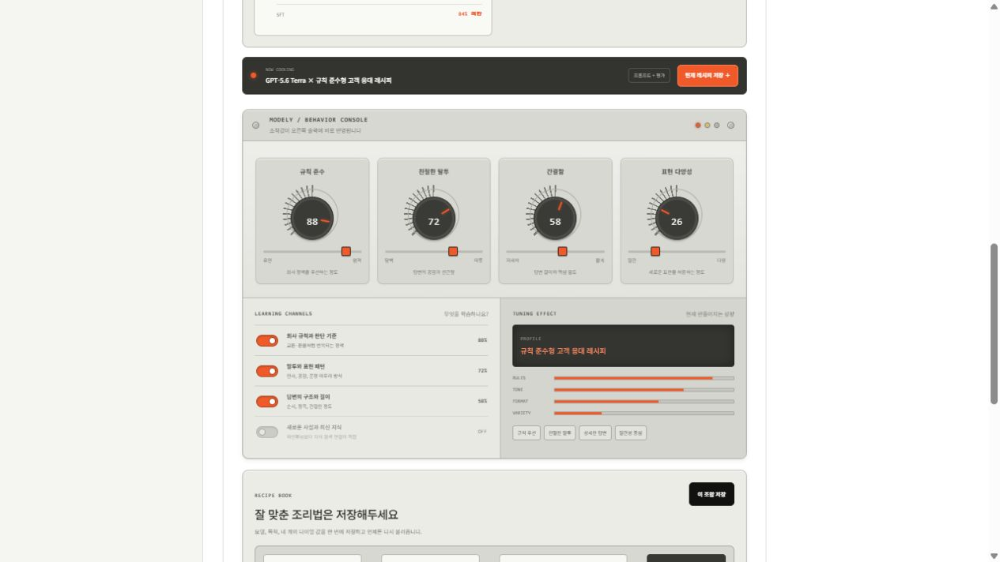
LIVE / 제품 UX 데모 Modely · 모델리 2026.08 – 진행 중 정책 위반 응대, 티켓 오분류, 문서 필드 누락, 콘텐츠 검수 실패를 줄이기 위한 AI 튜닝 설계 도구. 업무별 데이터·목표 출력·평가 기준을 연결하고 레시피와 검증 계획을 공유합니다.
Next.js React TypeScript
구현과 공개 범위 말투를 바꾸는 것만으로는 파인튜닝의 필요성을 설명하기 어렵습니다. 반복되는 업무 오류를 정의하고, 프롬프트·검색·구조화 출력으로 해결할 수 있는 문제와 학습을 검토할 문제를 구분하도록 설계했습니다.
네 가지 업무 시나리오: 정책·승인 사례 → 조건 확인과 예외 이관, 전문가 라벨 티켓 → 유형·우선순위·담당 팀, 원문·필드 정의 → JSON과 미확인 값 null, 승인 상품 사실 → 검수 문구와 수정 사유. 실패 유형과 목표 출력 예시를 비교합니다. 파란색 입체 UI와 업무 기준 다이얼로 출력 동작을 쉽게 체험합니다. 목적별로 해결할 오류, 학습 대상 동작, 먼저 비교할 방법을 표시하고 Macro-F1·필드 정확 일치·예외 이관 등 검증 항목을 연결했습니다. 실제 측정과 설정 시뮬레이션은 구분합니다. 모델·목적·질문·다이얼을 레시피로 저장하고 공유 링크로 복원합니다. 고객 인계 JSON에는 입력·출력 예시와 업무 목적, 학습과 분리한 평가셋 비교 계획 및 미실행 상태를 담습니다. 기존 레시피 호환성도 유지했습니다. 현재 공개판은 프런트엔드 제품 데모입니다. 답변·다이얼 지표는 규칙 기반 예시이며, 실제 API 호출·파일 분석·학습·고객별 배포는 연결되지 않았습니다. 가상의 성능 향상 수치는 제거했습니다. 평가 항목은 미실행 계획이며 모델 제공사의 학습 지원과 계정 접근 조건은 별도 확인이 필요합니다.
LIVE Anatomy Atlas 2026.09 계통별 분리·검색·원본 내보내기를 지원하는 3D 해부학 탐색기.
React 19 TypeScript Three.js
사용 중 / 원격 유지보수 MED-RAG 2025.10 – 안암병원 유방암 진료 교수의 개인 PC에서 사용하는 RAG. 2025년 10월 설치 이후 원격 업데이트를 지원하며, 공개 평가·튜닝은 별도 합성 데이터 실험입니다.
Python LangChain Gemma 3 27B (Ollama, 온프렘)
AOAI
CODE / EXPERIMENT Agent Orchestra 2026.07 LangGraph 멀티에이전트 구조, 재작성 루프와 오프라인 구조 검증.
Python LangGraph (병렬 fan-out) LangSmith
구현과 공개 범위 멀티에이전트 시스템의 뼈대(오케스트레이션·메모리·평가)는 모델 품질과 분리해서 검증할 수 있어야 합니다. med-rag를 납품하며 배운 '검증 가능한 에이전트' 원칙을 일반화한 오픈소스 레퍼런스예요.
supervisor → 병렬 리서처 → critic → 재작성 흐름을 구현합니다. 오프라인 mock은 구조 검증입니다. 실제 모델 품질이나 매 실행의 개선을 입증하지 않습니다.
PROTOTYPE / CODE Terracotta 2026.07 모델 라우팅·도구 승인·사용량 기록·Docker 셀프호스팅을 연결한 개인 AI 작업실.
TypeScript Next.js 16 + Cloudflare Workers D1 + Drizzle (레지스트리·사용량 원장)
SD—AI
LIVE Smart Docent — Location-Aware AI Guide 2025.08 – 진행 중 실시간 위치 기반 1:1 AI 도슨트 · LangGraph 멀티에이전트 · 한영일중 4개 국어 — 4인 팀 프로젝트 (팀 리더)
Next.js App Router TypeScript Tailwind CSS
구현과 공개 범위 관광객은 수백 년의 역사를 안내판 하나로 스쳐 지나가요. 지금 서 있는 위치를 아는 도슨트 — 이동을 따라오며 내 언어로 현지 전문가처럼 답해주는 가이드를 만들고 있습니다.
내 역할 (팀 리더) — 기획, AI 데이터 전처리(에이전트에 들어가는 장소·관광 콘텐츠), 캐릭터 디자인 위치 파이프라인 — 브라우저 Geolocation 실시간 좌표 + Mapbox GL JS 마커·카메라 연출 (경복궁·북촌·창덕궁·인사동·청계천 데모) 에이전트 중계 — Next.js API가 선택한 장소·질문 맥락을 LangGraph 멀티에이전트 도슨트에 전달, LLM 미연결 시 로컬 응답 폴백 모듈형 설계 — 장소 데이터·지도 스타일·LLM 엔드포인트를 독립적으로 교체 가능, API 키는 서버 환경변수에만 공개 데모는 서울 샘플 데이터 기반이고, LLM 엔드포인트 미연결 시 로컬 폴백으로 응답합니다.
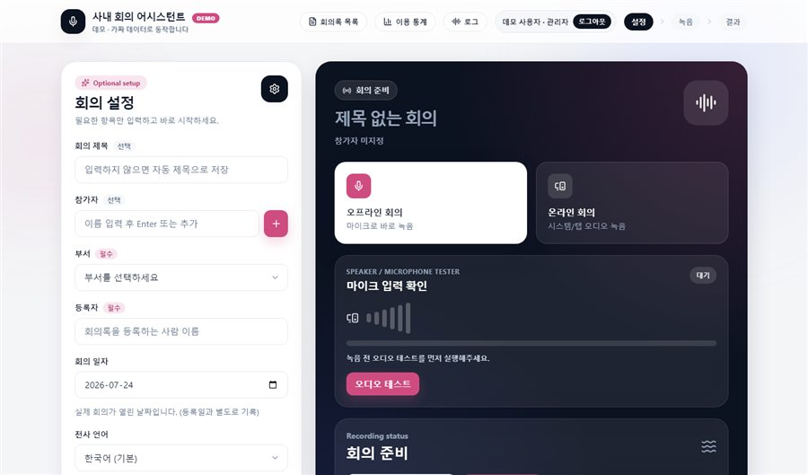
INTERNAL / UI DEMO Meeting Assistant 2026.06 – 2026.07 현재 RTX 4090에서 운영하는 사내 회의 어시스턴트. 공개 화면은 샘플 데이터 데모입니다.
Python 백엔드 faster-whisper large-v3 (CUDA) pyannote 3.1
LIVE Design Gallery 2026.07 유명 디자인을 코드로 배우는 갤러리 · 63개 데모 · KO/EN
HTML/CSS/JS (무의존) Three.js WebGL Higgsfield AI 에셋
구현과 공개 범위 스크린샷으로만 보는 디자인 레퍼런스가 아니라, 열어서 만져보고 복사해서 바로 쓰는 '살아있는 레퍼런스'가 필요했어요.
1데모 = 1파일 — 인라인 CSS/JS, 빌드 도구 없음. 어디든 복사해서 동작 갤러리 뷰어 — 라이브 미리보기 + 소스 코드를 한 화면에서 이중언어 전파 — ?lang=en 파라미터가 데모 내부 텍스트까지 전환 AI 에셋 파이프라인 — Higgsfield 생성 → 배경 제거 → 경량화 → 데모 삽입 빌드가 없는 구조라 데모 간 코드 재사용·컴포넌트화가 안 되고, 데모가 늘수록 관리 비용이 커집니다.
LIVE PPT Studio — AI Deck Builder 2026.07 브랜드 디자인 시스템 기반 슬라이드 제작 · AI 슬라이드 생성 · PPTX/PDF 내보내기
Next.js 16 React 19 TypeScript 5
구현과 공개 범위 발표자료마다 디자인을 처음부터 다시 잡는 게 아까웠어요. 실제 브랜드의 디자인 시스템을 토큰으로 정리하면 클릭 한 번으로 덱 전체의 룩을 바꿀 수 있습니다.
디자인 시스템 엔진 — Apple·Stripe·Linear 등 35개 브랜드의 색·타이포·간격 토큰화 드래그앤드롭 에디터 — Zustand 스토어 기반 undo/redo·자동저장 캔버스 AI 변환 — PDF/DOCX 업로드 → Claude Structured Outputs로 슬라이드 JSON 생성, 자연어로 덱 수정 진짜 내보내기 — pptxgenjs로 벡터 텍스트·도형 OOXML 생성 (PowerPoint에서 계속 편집 가능) 정적 데모는 API 키가 없어 AI 생성이 꺼져 있고(편집·테마·내보내기는 동작), 복잡한 PPTX 임포트는 일부 손실이 있습니다.
PRE-RELEASE 이불 안 마음친구 2026.07 멘탈 케어 앱 · iOS/Android+웹 · 기획·디자인·개발 전부 직접 — 실제로 작동하는 에뮬레이터 제공
HTML/CSS/JS (바닐라) PWA Capacitor (iOS/Android)
구현과 공개 범위 힘든 밤, 판단하지 않고 들어주는 존재가 있으면 좋겠다는 생각에서 시작한 첫 엔드투엔드 앱 프로젝트입니다.
3플랫폼 아키텍처 — 웹 프론트 하나로 PWA + Capacitor iOS/Android 커버 서버리스 전환 — 런타임 설정(apiBaseUrl)으로 데모↔서버 연동 전환, 코어 루프는 전부 로컬 동작 감성 디자인 — 폰트·일러스트까지 직접 골라 만든 포근한 UI 스토어 배포 전이고, AI 대화 등 서버 의존 기능은 데모에서 제한됩니다.
PRE-RELEASE 후방위 (HEARTBREAKER) 2026.07 이별 후폭풍 방지 앱 · 연락 충동 진정·90일 회복 여정·AI 가상 대화 — 이것도 에뮬레이터에서 실제로 작동해요
Next.js (React 19) Tailwind CSS 4 OpenAI API (서버)
구현과 공개 범위 이별 직후의 충동적인 연락이 가장 큰 후회를 만듭니다. 그 순간을 붙잡아주는 도구를 만들었어요.
행동 개입 루프 — 90초 충동 진정 타이머, 술·새벽 연락 방지, 보내지 않는 편지 AI 가상 대화 — 작별·욕하고 비우기·재회 점검 3모드, 서버 API로 분리 오프라인 우선 — 단일 React 클라이언트 + localStorage라 서버 없이도 대부분 동작 (포폴 에뮬레이터가 그 증거) 90일 회복 여정 — 단계별 미션과 진행률로 감정 정리를 구조화 배포 전이고, 번호 보호는 OS 수준 차단이 아닌 앱 내 개입입니다. 에뮬레이터의 AI 응답은 데모 답변이에요.
LIVE 워크메이트 (WALK-MATE) 2026.07 테마별 서울 산책 코스 추천 · 3D 지도 위를 캐릭터가 실제 보행로 따라 걷는 프리뷰
Expo SDK 55 React Native 0.83 MapLibre GL JS 5
구현과 공개 범위 지도 앱은 최단 경로만 알려주지만 산책에도 취향이 있어요. 테마와 시간을 고르면 코스를 추천받고, 걷기 전에 그 길을 미리 '걸어볼' 수 있게 했습니다.
3D 경로 프리뷰 — MapLibre GL 기울어진 지도에서 캐릭터가 보행로 좌표를 따라 걷고 카메라가 추적 (배속 x12~x48) 취향 온보딩 — 테마 8종 × 시간대 선택 → 맞춤 코스, 기기 저장 퀘스트 게임화 — 코스마다 체크포인트 4~5개, 도착 토스트·포인트·완주 모달 동화책 디자인 — '종이 위의 산책' 컨셉, Higgsfield 일러스트 8장 코스가 서울 8개에 한정되고, 실제 걷기 GPS 트래킹은 아직 없습니다.
UI DEMO TableON 2026.07 주문·예약·CRM과 AI 분석 흐름을 보여주는 레스토랑 관리 데모.
HTML/CSS/JS SVG 차트 Claude API
구현과 공개 범위 식당 사장님들이 주문·예약·고객·급여를 제각각의 도구로 관리하는 걸 보고, 올인원에 AI 경영 분석까지 얹은 구독형 SaaS를 설계했습니다.
인브라우저 시뮬레이터 — 가상 데이터 위에서 전 기능이 실제로 동작하는 데모 RFM CRM — 자동 세그먼트(VIP·이탈 위험 단골 등), 방문 주기 기반 '다시 부를 고객' 감지 가게별 AI — 2분 온보딩 인터뷰 + 데이터 요약으로 시스템 프롬프트 생성 → 일반론이 아닌 우리 가게 기준 답변 운영 자동화 — 생일 쿠폰·문자 자동 발송, 월급 자동 정산, 역할 3단계 권한 데모는 새로고침 시 초기화되고, 실제 결제·문자 발송은 연동 키가 필요합니다.
LIVE 하루 한 장 (DAILY BOOK) 2026.01 일기를 모아 한 권의 책으로 만드는 웹앱 · Google 로그인/게스트
React Vite Firebase Auth
구현과 공개 범위 흩어져 사라지는 하루의 기록을 모아 '한 권의 책'이라는 물성으로 돌려주고 싶었어요.
기록 → 책 메타포 — 일기가 쌓이면 책 형태 뷰로 엮이는 UI Firebase 풀스택 — Auth(Google/게스트) + Firestore + Hosting PDF·실물 인쇄 내보내기와 검색·태그가 아직 없습니다.
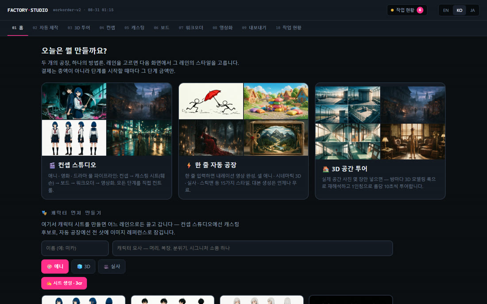
PRIVATE / LOCAL TOOL Factory Studio 2026.08 대본·워크오더·영상 생성·조립을 연결하는 로컬 제작 도구.
Python (표준 라이브러리 위주) ffmpeg Higgsfield API
구현과 공개 범위 숏드라마·지식쇼츠·광고를 만들 때마다 프롬프트를 처음부터 다시 짜고 있었어요. 매체와 템플릿만 갈아 끼우면 같은 구조로 도는 '공장'을 만들면 그 반복이 사라집니다.
워크오더 컴파일러 — 스펙 JSON → 샷그룹별 프롬프트 전문. 표준 라이브러리만 써서 단독 임포트 가능 대본 생성 — 한 줄/주제에서 기승전결 아크와 관통 소품을 잡고 발화 예산을 자동으로 맞춤 병렬 생성 + 리트라이 래더 — 웨이브 단위로 생성하고, 실패하면 재제출 → 완곡화 순으로 자동 승급 재개 설계 — manifest가 job_id를 폴링 전에 기록해서 재시작해도 이어서 진행 (중복 과금 차단) 조립·영수증 — concat + 산술 SRT + 그룹별 실측 길이와 리트라이 내역이 담긴 assembly.json 영상 생성 단계는 외부 API 로그인·크레딧이 필요해서 공개 배포하지 않았습니다. 로컬에서 python studio/server.py 로 띄웁니다.
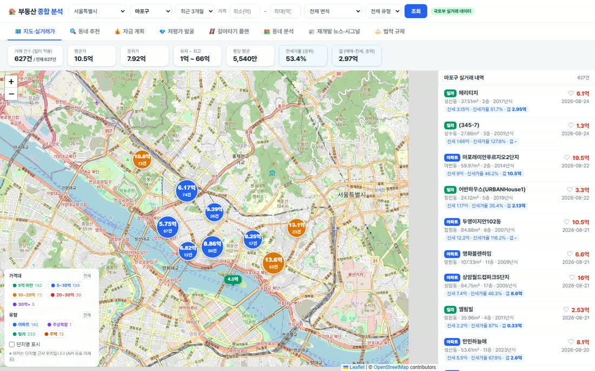
LIVE Seoul Property Analysis System 2026.08 지도 위 실거래가 · 동네 추천 · 대출·세금 자금 계획 · 갈아타기 시나리오 · 재개발 뉴스 시그널 · 규제 모니터링
FastAPI Leaflet 지도 SPA 국토부 실거래가 API
구현과 공개 범위 집을 알아볼 때 실거래가, 동네 평판, 대출 한도, 세금, 규제를 전부 다른 사이트에서 찾아야 했습니다. 지도 한 화면에서 '내 자금으로 여기를 살 수 있는가'까지 답이 나오게 만들었습니다.
매물 수집 — 아파트·연립다세대·단독다가구 실거래가 API를 유형별로 호출하고, 오피스텔·도시형생활주택은 제외 규칙으로 걸러냅니다 동네 검색 — 별칭(망리단길 등) → 법정동 이름 매칭 → OSM 지오코딩 후 최근접 법정동 스냅 순으로 해석 자금 계획 엔진 — 보유현금·연봉(부부합산)·생애최초·출산 여부로 LTV·DSR·절대한도 대출 가능액을 추정하고, 취득세 감면과 중개보수를 반영해 실제 필요 현금을 산출 역세권 계산 — 매물과 최근접 역의 하버사인 거리를 도보 67m/분으로 환산해 800m 이내를 역세권으로 표시 뉴스 시그널 — 구글 뉴스 RSS를 크롤링해 호재·악재 키워드 가중치로 상승·하락 시그널을 내고, 규제 뉴스는 별도로 변경을 감지 실거래가 API가 좌표를 주지 않아 지도 마커는 단지별 근사 위치입니다. 뉴스 시그널은 기사 제목 키워드 기반 참고 지표이고 투자 자문이 아닙니다. 규제 정보는 작성 시점 기준이며, 서버리스라 지오코딩 캐시는 인스턴스 메모리에만 유지됩니다.
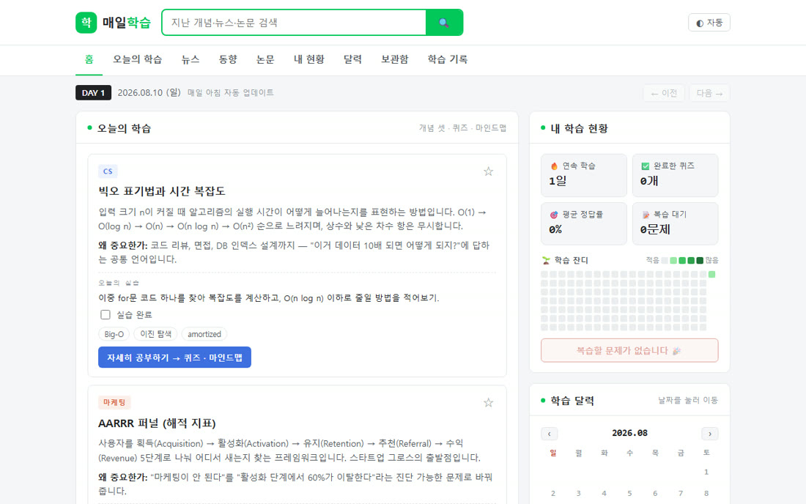
LIVE Daily Study Briefing 2026.08 CS·마케팅·AI를 매일 아침 자동으로 큐레이션하는 학습 포털 · 퀴즈·마인드맵·잔디·복습
순수 정적 HTML/JS/JSON GitHub Pages Claude CLI 배치
구현과 공개 범위 매일 뭘 공부할지 찾는 데 시간을 다 썼어요. '오늘 볼 것'을 대신 정해주고, 본 걸 잊지 않게 붙잡아주는 개인 포털이 필요했습니다.
무인 갱신 — 로컬 PC의 Claude CLI가 새 콘텐츠 JSON을 만들어 push → GitHub Pages 자동 재배포 학습 루프 — 딥다이브 → SVG 마인드맵 → 4문제 퀴즈(채점·해설) → 틀린 문제 자동 수집 → 복습 모드 지속 장치 — 학습 스트릭·평균 정답률·GitHub식 잔디 20주 그래프, 전부 localStorage 포털 UX — 지난 날짜 전체 검색, 학습 달력, 보관함(☆ 저장), 키워드 랭킹, 해시 라우팅 딥링크 진도가 브라우저 localStorage에만 남아서 기기를 옮기면 초기화되고, 갱신은 제 PC가 켜져 있어야 돕니다.
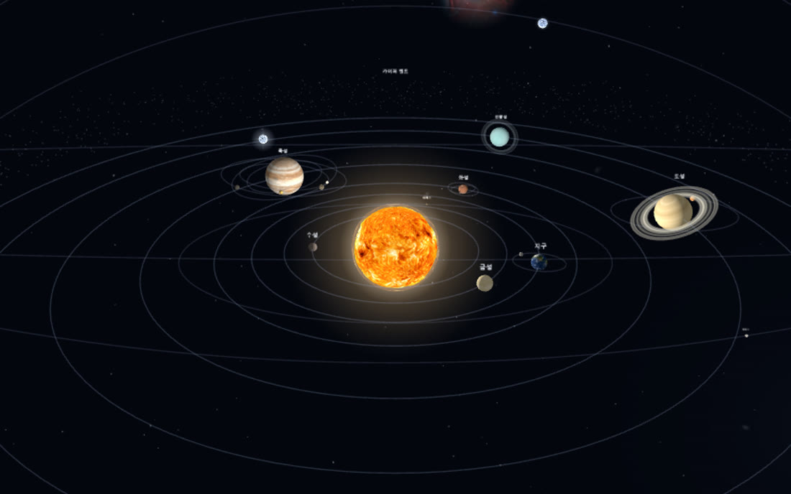
LIVE Universe — 3D Solar System 2026.08 실제 천문 데이터로 도는 3D 태양계 · 날짜 달력·조종석 비행·138억 년 탄생 시네마
Three.js r128 GLSL 셰이더 바닐라 JS 단일 모듈
구현과 공개 범위 천문 시뮬레이터는 대개 '정확하지만 지루하거나', '예쁘지만 데이터가 없거나' 둘 중 하나였어요. 실제 궤도 계산 위를 직접 날아다닐 수 있는 우주를 만들고 싶었습니다.
J2000 역기점 계산 — 평균 황경 + 실측 공전 주기로 임의 날짜의 행성 배치 산출 (원 궤도 근사) 실측 물리 — 자전 주기·자전축 기울기 반영, 금성·천왕성·명왕성은 IAU 기준으로 역행 자전 위성 좌표계 보정 — 1/T_rel = 1/T_moon − 1/T_planet 로 모행성 기준 실제 공전 주기 재현 조종석 비행 — 추력·롤·자동 항법(장애물 회피)·레이더·WebAudio 엔진음, 충돌 판정과 폭발 연출 탄생 시네마 — 빅뱅 화이트아웃부터 오늘까지 9단계, 파티클 4,500개 + 지구 텍스처 3장 크로스페이드 크기·거리 비율은 교육용으로 과장돼 있고(실제 비율이면 화면에 아무것도 안 보여요), 원 궤도 근사라 실제 천체력과 수 도 차이가 납니다.
LIVE 천기연 天機緣 2026.07 신녀 연화의 AI 사주 풀이 · 만세력·진태양시 보정·대운·신살 — 고민 맞춤 해석
HTML/CSS/JS (바닐라) 자체 만세력·사주 엔진 Claude API
구현과 공개 범위 사주 서비스 대부분이 생년월일만 받아 누구에게나 비슷한 결과를 줍니다. 절기·시각·태어난 지역까지 제대로 계산하는 '진짜' 사주 풀이를 만들고 싶었어요.
계산 엔진 — 절기 기준 만세력으로 연주·월주, 60갑자 일주 산출 (lunar.js·saju.js) 진태양시 보정 — 출생지 경도로 시간 보정, 같은 날 태어나도 결과가 달라짐 AI 해석 — 계산 결과 + 사용자의 고민을 Claude(Vercel 서버리스)에 넘겨 맞춤 풀이 신녀 연화 UX — 캐릭터 몰입형 모바일 인터페이스 데모라 실제 결제는 없고 후기는 샘플입니다 (실서비스 모드는 결제 연동 후 전환).
LPRAI
CODE Legal PDF RAG 2025.06–2026.07 법률 PDF 검색과 근거 인용을 연결한 RAG 챗봇.
Python LangChain Chroma
구현과 공개 범위 공개 코드는 학습·제품 실험 범위입니다.
HAI
CODE / EXPERIMENT HiggsMCP 2026.07 이미지·영상 생성과 게시 모듈을 연결하는 콘텐츠 자동화 실험.
Python FastAPI Docker
구현과 공개 범위 공개 scheduler의 일부 게시 호출은 미연결 상태입니다. 완전 무인 운영을 입증하지 않습니다.
검색 결과가 없습니다. 다른 이름이나 기술을 입력해 보세요.